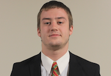
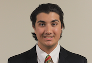
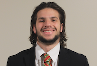
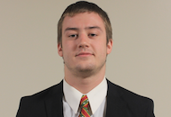
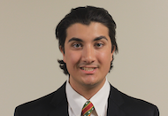
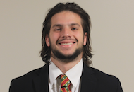

ABOUT US
On Saturday April 23,2016 56 members were installed into the Tau-Psi chapter of Kappa Sigma at Fredonia State University. The members of Tau-Psi have already completed over 2,000 hours and raised thousands of dollars for A Greater Cause. This local community service supported many charitable organizations and is a great representation of the core values of Kappa Sigma.
Kappa Sigma is the largest fraternity at Fredonia State, has the most community service hours than any other group on campus, and has developed a great reputation with all on campus. In a exactly a year Tau-Psi went from a Colony to a successful Chapter of Kappa Sigma. We are very competitive in sports and academics as well. We won Greek Week in our first appearance. We have the largest cumulative GPA than any other Fraternity at Fredonia. We have multiple Intramural's Awards. It was a long road to success but the brothers were determined to fullfill every task at hand. Our journey continues even though it's lonely on the top, we strive to remain on the top!
THE FIRST EXECUTIVE COMMITTEE
 





|
Joel Rosario Nicholas Burdick Nicholas Arcoraci Michael Querrieo Leon Vanburch |
First Grand Master Joel "Jumper" Rosario was born May 6,1993. He graduated on the dean's list with a bachelors degree in finance. Joel was the main reason why Kappa Sigma came to Fredonia State. As a transfer student from Finger Lakes Community College, he wanted to be apart of Greek Life but none of the fraternities at Fredonia State had the values and reputation he was striving for. He did research and found Kappa Sigma as THE FRATERNITY, from that moment he made a committment to himself that he'll do anything it takes to make Kappa Sigma be in Fredonia and become the standard of what a real Fraternity is.
First Grand Procurator Nicholas Burdick was born September 30th, 1995 in Dunkirk NY. He is from Fredonia New York. He has been apart of Kappa Sigma since his freshman year of college, way back when Tau-Psi was still a colony. He is now the Grand Procurator of Kappa Sigma. Outside of Kappa Sigma he is a student ambassador, Residental Assistant, Assistant Treasurer of Enactus, and a duel major in Finance and History.
First Grand Master of Ceremonies Nicholas Arcoraci was born September 30th, 1995 in Dunkirk NY. He is from Fredonia New York. He has been apart of Kappa Sigma since his freshman year of college, way back when Tau-Psi was still a colony. He is now the Grand Procurator of Kappa Sigma. Outside of Kappa Sigma he is a student ambassador, Residental Assistant, Assistant treasurer of Enactus, and a duel major in Finance and History.
First Grand Treasurer Michael "The Goat" Querrieo was born Oct 29,1993. Michael was the prime example of a scholar. He majored in Accounting and graduated with a 3.98 GPA. When Michael was first introduced to Kappa Sigma he was hesistant because of the reputation fraternities had in Fredonia, but Kappa Sigma was new and he realized he had the opportunity to be apart of an organization that had no negative stigma which still doesn't to this day. Michael quoted "Kappa Sigma helped me meet new people, branch out of my comfort zone and prepare for the real world".
First Grand Scribe Leon St James Vanburch was born on January 1st 1995 in Queens NY. He would later spend most of his years growing up,in Valley Stream Long Island. Leon studied music industry in the Sate University of New York at Fredonia. During his spring semester sophomore year he found the chance to helming create something great in Fredonia, and joined the Kappa Sigma colony, where he became the first official Grand Scribe. After a year of his hard work as Scribe, Leon would later spend his senior year of college as the Awards Chair. Leon would then go on and create the first official awards program that the fraternity uses to this day.